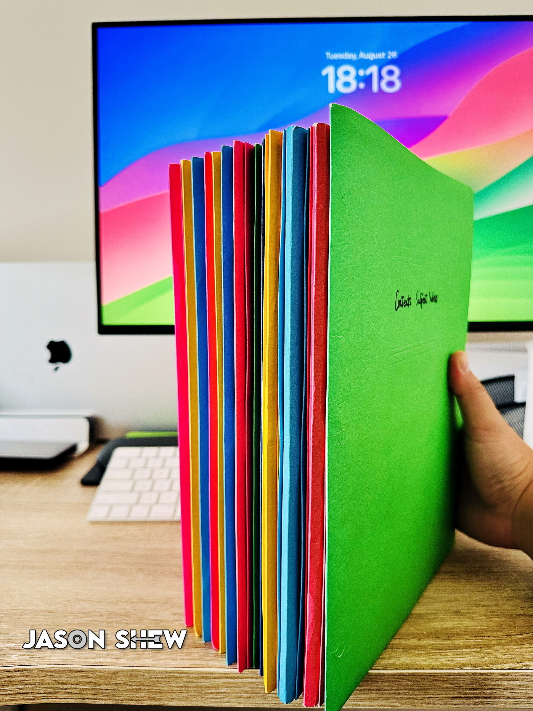

Full Moon
I was lucky to see scenery straight out of a Ghibli movie in real life.
What comes to mind when you see the full moon?
For me, it’s always this passage from The Sheltering Sky:
Because we don’t know when we will die
We get to think of life as an inexhaustible well
Yet everything happens only a certain number of times
And a very small number, really
How many more times will you remember a certain afternoon of your childhood
Some afternoon that is so deeply a part of your being that you can’t even conceive your life without it?
Perhaps four or five times more
Perhaps not even that
How many more times will you watch the full moon rise?
Perhaps twenty, and yet it all seems limitless
— Paul Bowles
From the moment we are born, our names become the sounds that connect us to the world. They shape first impressions, carry family history, and potentially reflect cultural ties. They are hardly just words.
As my iPhone was being serviced at the Genius Bar, I got to spend some quality time with my iPod classic again. There’s a thrill in spinning 2025 tracks on a gadget from 2007. At this point, it’s actually old enough to vote.
A Little Thought on "Bad Habits"
When a person cannot satisfy their deeper emotional needs, like love, security, belonging, or purpose, they often redirect that emptiness into various substitute desires / compensatory behaviours that afford immediate pleasures or comforts. These substitutes can become excessive, inappropriate, or addictive, thus often referred to as “bad habits.” Examples include:
- Sexual desire (overly seeking sex)
- Material desire (shopping, hoarding, etc.)
- Food-related desires (overeating, binge eating, eating disorders, etc.)
- Substance use (smoking, drinking alcohol)
- Behavioural addictions (such as video games)
These compensations can feel soothing in the short term, but they don’t address the root cause. Over time, they can spiral into addictions or unhealthy patterns, which only widen the gap between what a person truly needs and what they’re chasing.
It’s clearly a vicious cycle: unmet needs → temporary coping behaviours → guilt/shame or further emptiness → even stronger cravings. Breaking this cycle usually requires not just self-control, but also self-awareness and sometimes therapy to identify the underlying emotional void.
Addictions and compulsive behaviours aren’t just “bad habits.” They’re often signals that something deeper in us is being ignored. If we learn to listen to those signals instead of numbing them, we can actually grow in healthier ways.
For my new program at Western University, I’ll be working with this gigantic textbook, elegantly arranged into 13 sections. Special thanks to my friend WS!
I’ve got a weird soft spot for high-quality lime-green / yellow-green silicone products. That might explain my fascination with Joseph Joseph.
Turns out I’ve kept every macOS installer ever since Apple made the first one downloadable in the App Store.

AI might design a dog with five legs. Life’s challenges left Milo with three. Yet he brightens our day every time he visits.


I was trying to use Apple Music Sing on my Apple TV, only to find my model doesn’t actually support it. It requires a third-generation Apple TV 4K, while mine is second generation. 🤷🏻♂️
I’ve been a proud Endel Premium user since the fall of 2020. As of now, I have spent 1709 days with the app and averaged about 4 hours of use every night.
I honestly can’t sleep properly without my CPAP or Endel’s Sleep soundscape. This wonderful app has been part of my sleep routine for a few weeks shy of five years.

It looked like the links and icons on my site were shifting upward in dark mode on hover, but nothing changed in the CSS. Light mode had no issues. After some digging, I realized it was an optical illusion caused by the colour contrast. Changing the hover colour fixed it.
Which will die first, Vega, Altair, or the Sun?
Among the three stars — Vega, Altair, and the Sun — Vega will die first, followed by Altair, and then our Sun, which will be the last to reach the end of its life.
The primary reason for this sequence lies in their masses and lifespans, which are inversely related: the more massive a star, the faster it burns through its nuclear fuel and the shorter its lifespan.
Stellar Mass and Lifespan: The Trade-Off
To understand this better, let’s compare their masses and expected main-sequence lifespans:
| Star | Spectral Type | Mass (Sun = 1) | Estimated Lifespan (Main Sequence) |
|---|---|---|---|
| Vega | A0V | ~2.1 | ~500 million years |
| Altair | A7V | ~1.8 | ~1–2 billion years |
| Sun | G2V | 1.0 | ~10 billion years |
- Vega, the brightest star in the constellation Lyra, is more than twice as massive as the Sun. It is a relatively young star, around 450 million years old, and is already about halfway through its main-sequence life. At this pace, it’s expected to exhaust its core hydrogen in less than 500 million years from now.
- Altair, the brightest star in Aquila, is slightly less massive than Vega and rotates very rapidly. Its mass gives it a longer lifespan than Vega—about 1 to 2 billion years in total.
- The Sun, our middle-aged yellow dwarf, has an estimated total lifespan of about 10 billion years. Currently, it is about 4.6 billion years old, with roughly 5 billion years remaining before it leaves the main sequence.
Why Bigger Stars Die Sooner
Massive stars have stronger gravitational pressure at their cores, which leads to higher temperatures and faster nuclear fusion. Although they have more fuel to burn, they burn it much more rapidly, dramatically shortening their lifespans.
In contrast, stars like the Sun burn fuel more slowly and steadily, giving them far longer to shine.
Conclusion
Vega will die first, likely within a few hundred million years. Altair will follow, and the Sun will live the longest of the three. Their fates serve as a reminder of the delicate balance between mass, energy, and time in stellar evolution.
It would have made sense for Kesha to split this song into two seamless tracks, the first functioning as an intro to the entire album.
Say your email is john@netflix.com. People will probably think you work there. But few are going to think that if it’s john@yahoo.com.
Is Weather API down?
{
"location": {
"name": "London",
"region": "Ontario",
"country": "Canada",
"lat": 42.9833,
"lon": -81.25,
"tz_id": "America/Toronto",
"localtime_epoch": 1753938200,
"localtime": "2025-07-31 01:03"
},
"current": {
}
}
I’ve switched back to the 24-hour notation on my main site, blog, and every other site I control. I’ve always been a fan of the 24-hour system, and the Canadian government encourages its use too. So… I figure doing a bit of mental math (like remembering that 00 is 12 a.m., 12 is 12 p.m., and subtracting 12 if the hour’s over 12) isn’t that hard, eh?
I’ve moved my Contacts and Calendar from iCloud to Google. I still keep iCloud Mail for non-personal emails. iCloud Reminders has never really grown on me; I only use it once in a while. iCloud Notes is the only one I still find unbeatable.
Finally revamped my website. It was a bit of work, but I’m happy to have moved everything back to my main domain but my blog.
A typical day in Canada right now:
A neighbour had an Amazon package swiped off his porch. Someone across the street caught it on her security cam and let him know. She asked what was taken and how much it was worth. Turns out, it was a security camera — meant to stop exactly this kind of thing.
Remnant
The earthquake struck when I was six.
I survived.
Most of my classmates didn’t.
Now I’m in college, in another city.
Whenever I return home, I pass their parents on the street.
They stop me,
their eyes scanning me —
as if searching for what might have been.
Then, with a gentle, aching smile, they say,
“You’ve grown so much.”
This is how a footlong sub boosts its price by 79.8% when it gets delivered to you in Ontario, Canada.

my best score so far Play Wordaholic now!

My 12 Lessons of Life
Lesson 01: I am not the centre of everyone’s attention
Lesson 02: Learn to embrace farewells
Lesson 03: No one will care about me forever
Lesson 04: Master my emotions
Lesson 05: Love myself before I love anyone else
Lesson 06: Health is my greatest wealth
Lesson 07: Accept every regret with grace
Lesson 08: Save my anger for what truly matters
Lesson 09: Embrace my own imperfections
Lesson 10: Learn to find joy in solitude
Lesson 11: Brave souls savour the world
Lesson 12: Always stay true to myself
Trapped in the claws of the bear
And I wonder
Will all things be empty again?
Bare hands with my winter fears
Cold till it burns
You’ll be blowing away the frostbites
When we’ll return
Ever wonder why ChatGPT 4o sometimes produces only an image without any follow-up text? This is the prompt behind the scenes.
Snacks
Granny hands me a bag of snacks,
edges soft, the crunch long gone.
I look at Mom and ask,
“Did they expire?”
She smiles, half-lost in thought,
“No, love — we just came home too late.”

I’m not impressed by how PDF Expert provides their lifetime subscription. For a one-time payment of CA$199.99 (or US$97.99 on StackSocial), customers have no access to their future big updates and new features, including the AI assistant. Also, it’s macOS only; the mobile apps are not included.
Oops… Just found out that Silicon Valley’s trendy social media app Airchat is already toast. Its official website has shut down. That was fast!
While Elie Steinbock believed that Airchat would change social media forever, Elaine Moore was right on the money — Airchat’s viral success will not last.
Finally replaced every JSON file with a table in an SQL database tailored to my needs. Whipped up some APIs to connect the front end with the database. Created several iOS Shortcuts to push data to the server. Everything seems to be working perfectly after extensive testing. Now I’m feeling secure.
A buddy came across a futuristic telephone booth in Shanghai, China. All he had to do was scan a QR code with his iPhone camera and dial a number on a massive touchscreen. Wow.

Since I turned off “optimized battery charging” on my iPhone, the battery’s maximum capacity has been dropping way more slowly – only 4% over the past year.
Asking for a friend… Tons of items on Amazon are eligible for return within 90 days of receipt. How about the president of the United States?
I’m happy to see Threads has taken a step towards integrating into the Fediverse. Read more here.
If you can’t stand being alone, you’re as lonely as a desperate stray. If you thrive in solitude, you’re as free as a sovereign eagle.

I had no idea Timbaland teamed up with Malte Marten on a meditation music project last year. This is incredibly soothing. They created a unique and immersive listening experience.
Today I earned an Honours Bachelor’s degree in Computer Science with distinction from Western University. It might not feel like a huge employability boost these days, especially with AI and layoffs shaking up the industry. But still, it’s a great feeling to see years of hard work finally pay off.
It’s such a shame that tracks purchased from the iTunes Store today are still in AAC format at 256 kbps. Apple Lossless (ALAC) and Dolby Atmos (spatial audio) are not available for purchase. They’re only for streaming or offline downloads within an Apple Music subscription.
When did Instagram start to include a downvote button ( ↓ ) in every comment? Honestly I’m not a fan of it.
Back in 1980, KFC had around 6,000 locations across 48 countries, pulling in $2 billion a year ($2 billion in 1980 is roughly $7.66 billion in today’s dollars).
Fast forward to 2023, and the brand had grown to nearly 30,000 outlets in 145 countries, with annual sales reaching $2.83 billion.
JavaScript short date-time format:
- United States: Tue, 02/18/2025, 1:58 AM EST
- Canada: Tue, 2025-02-18, 1:58 a.m. EST
Without a doubt, the Canadian short date looks cleaner and more visually appealing, and the “a.m.” (or “p.m.”) style has a classic touch. However, it’s four characters long. Also, in the long date-time format, the word “at” appears between the date and time, whereas in the short version, it’s simply replaced by a comma. I dislike seeing more than one comma in a timestamp, so on this site, what you actually see is a hybrid version: Tue, 2025-02-18 @ 1:58 AM EST.
Hey Wikipedia, looks like we need some references here. At least my mom doesn’t call her that — she doesn’t even know her.


Each of us dies twice — once when life leaves us, and once when we fade from the memories of others
📸 shot on iPhone XS Max
*Driving with Google Maps on Apple CarPlay*
Me: Hey Siri, cancel this trip.
Siri: There’s nothing called “Trip” on your calendar.
Me: Cancel this current trip on Google Maps.
Siri: You’re not navigating in Apple Maps at the moment.
Me: Exit this trip.
Siri: Sorry, I don’t understand.

What defines beauty? Transience and serendipity.
Ephemeral enough to cherish, unexpected enough to amaze.
📸 shot on Nikon D90

A generous heart must set its bounds,
For those who take know none.
Like rivers drained by endless thirst,
They leave the well undone.
📸 shot on iPhone XS Max
Places like Value Village always leave me with mixed emotions. As soon as I walk in, I feel a rush of excitement. There’s an eclectic assortment of items, many of them surprisingly decent and offered at affordable prices. But in the end, I always feel a bit sentimental. These items were likely cherished by their original owners at one time, only to end up being sold for next to nothing. It’s bittersweet — and in a way, it feels like a reflection of human relationships.
The Audio-Technica M50xBT2 now supports Dolby Atmos. And more importantly, it doesn’t sound bad at all.
I’m wondering when they rolled out this feature as their official website doesn’t have any information about this update. I’m pretty sure Dolby Atmos was not available on these headphones last year.
If I named this post «Unconditional Love» it would come off as a cliché but honestly that’s what it’s all about
During the chaos of my parents’ divorce (when I was around 11), my uncles on my mother’s side (or maybe my grandmother—I can’t quite remember, but it doesn’t really matter since they shared the same values) offered to take me to a theme park out of town. But shortly after, they had a change of heart. They wanted to see who I would end up living with. Basically, if I had chosen to stay with my dad, whom they saw as their sworn enemy, they wouldn’t have bothered with me or the trip. I have to admit, for most of my adult life, I didn’t think anything was wrong with that—it’s kind of like how economics works: your employer is likely to withdraw benefits when they know you’re intent on leaving for another employer, seeing it as a way to avoid needless losses.
However, when I casually mentioned this to my landlord (yes, I’ve had many heart-to-hearts with this older lady), she was surprised, even a bit confused. She was like, “I don’t know what they were thinking, but if you were my grandchild and I knew you were leaving us to live with your dad, I’d want to take you anywhere you wanted and give you the best I could—because I wouldn’t know when I’d see you again.”
My eyes welled up. I was genuinely shocked to hear such a different perspective. Some people strictly prioritize benefits over kindness, while others don’t really care about gains and losses. It really got me thinking a lot about family values and what unconditional love truly meant. At one point, I even felt like I didn’t really know what love was.
I couldn’t choose the family I was born into, but I can choose to carry that conversation with me forever.
I wonder if there is a way for these music streaming platforms to prevent what I call “namespace pollution.” This term refers to different artists sharing the same name and being grouped together on a single artist page, especially when they are mononymous or have very common names. It’s really frustrating because, despite having the same name, these artists often create music in completely different genres and languages!
Anders Celsius, the proposer of the degree Celsius, died at the age of 42.
Daniel Gabriel Fahrenheit would have believed his opponent had died at 107.
Once I bought a frosted glass for $12 at IKEA. It was beautiful but a bit too big and didn’t have a handle. If I drank water from it before a meal I’d feel too full to eat. Just way too big. Weeks later I got an IKEA flyer and saw it’d been reduced to $7 and advertised as a vase.
If a developer has to respond to customer reviews like this, you may want to use your discretion in purchasing / downloading / using any of their apps.

As of today, two orcas have been linked to the deaths of four individuals: a Canadian woman, an American woman, an American man, and a Spanish man.
Orca attacks are a First World problem.

A youth squandered on empty praise, borrowed warmth, and momentary highs is like a dress hanging high on the boutique wall — worn by dozens, touched by hundreds, yet never truly claimed or wanted, left to fade beneath the passing years
📸 shot on iPhone XS Max

Silence is a glass of still water on an empty table, catching the slanting light of a fading afternoon
📸 shot on iPhone XR

Waiting is standing by the door at midnight, the porch light trembling in the hush of the night, knowing that if footsteps ever break the silence, they may not belong to the one you long for
📸 shot on iPhone XS Max

Loneliness is the quiet truth that the city’s endless clamour unfolds without you
📸 shot on iPhone XS Max